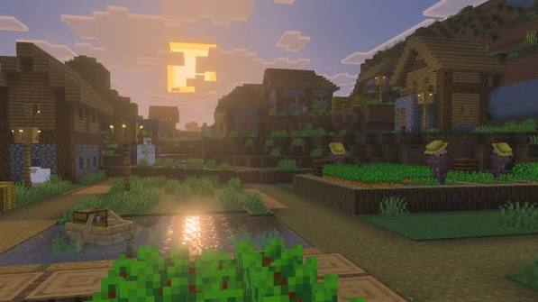

My first Minecraft Adventure
October 02, 2026 by Yashas Chinthapalli

This is the content of my first Minecraft adventure blog post. Minecraft is one of the most interesting games because it gives players almost complete freedom to explore, build, and create their own adventures. When I first entered the world, I immediately started exploring the surrounding environment looking for resources and a safe place to build my first home. After gathering wood and stone, I created some basic tools and began preparing for the night. Minecraft becomes especially exciting when the sun goes down because hostile creatures begin appearing around the player. I quickly learned that preparation and exploration are essential parts of surviving in the game.
Also I am working really hard to get the resources to build a castle and enter the nether dimension. I am really excited to see what adventures await me in the future as I continue to explore the vast world of Minecraft and create my own unique experiences.